From the Cherokee word for “place of the white owl,” the name Kanuga was chosen by Charlotte businessman George Stephens for the private mountain resort, the Kanuga Lake Club, he created in 1909 near Hendersonville, North Carolina. Combining a lake, cottages, and a lodge, Stephens envisioned a summer getaway for families. Sadly the devastating flood of 1916, in some ways comparable to 2024’s destructive Hurricane Helene, bankrupted many regional businesses and contributed to the failure of the club.
The property’s potential for spiritual renewal, however, was clear to Bishop Kirkman George Finlay of the Episcopal Diocese of Upper South Carolina.
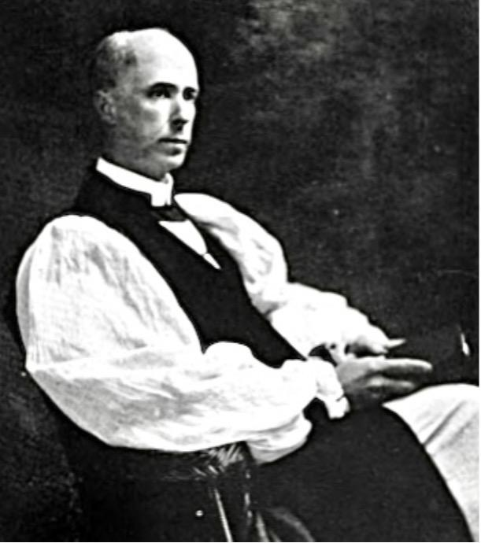
Described as personally persuasive and quietly intense, Bishop Finlay embraced the church’s national trend toward retreat centers and camps. He believed nature was a theological classroom. His vision for a simple, mountain environment encouraging humility and contemplation convinced the dioceses of both North and South Carolina to buy the property. The Kanuga Center opened under Bishop Finlay’s leadership in 1928.
Providing church programming, training, and planning during the Depression, World War II, and the post-war period, Kanuga firmly established itself as a center of Episcopal activity. Today, the Kanuga Center serves an even broader audience and welcomes guests of all religions and backgrounds.
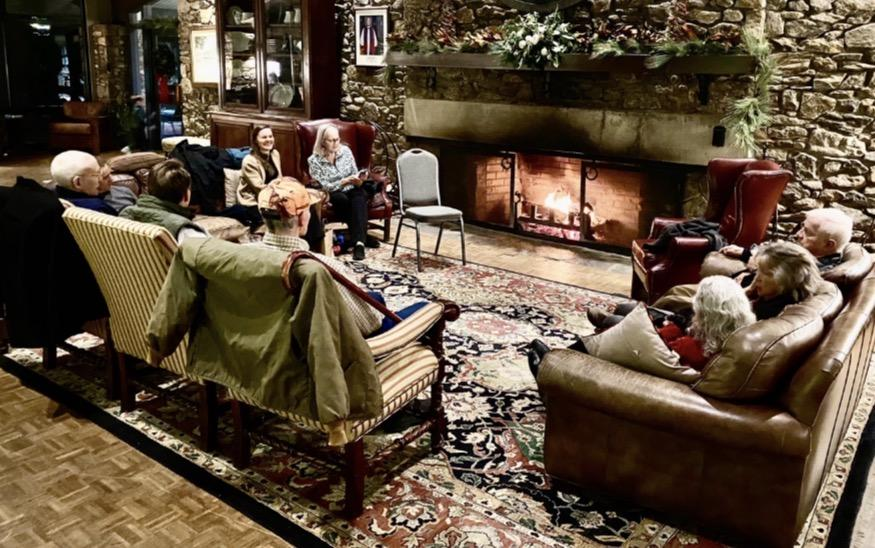
Retreats, conferences, and gatherings of several types fill the year; guests stay in cabins, guest houses, or may attend a summer camp for grades 2–10. Within the Kanuga Center, the Kanuga Inn and Lodging is a traditional hotel offering less rustic accommodations and access to the lake, trails, and facilities within the center’s 14 acres of Blue Ridge Mountains. At Christmas, the entire Center offers a unique weeklong holiday experience.
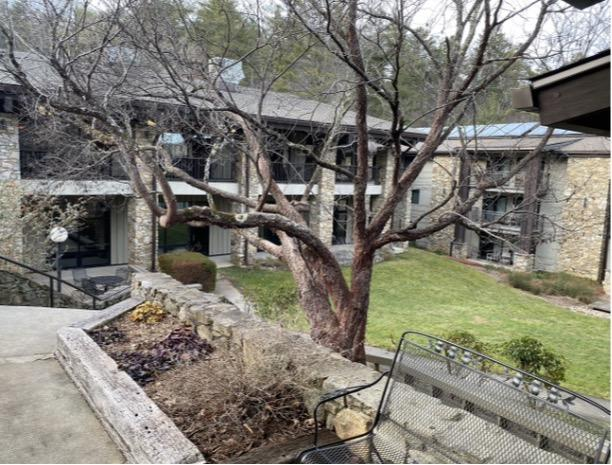
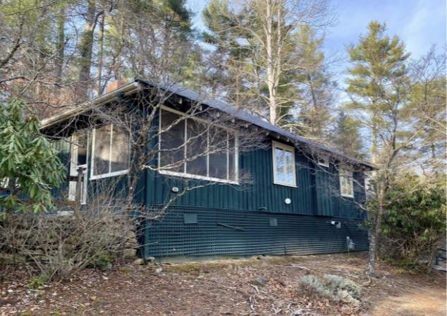
I first learned about Kanuga in 1994 when my mother took our family to a special Christmas week at Kanuga. Kanuga proved to be a perfect option. My sister thought this year was a good time to repeat the experience, as our families had expanded. Fortunately, there was wide enthusiasm for the suggestion. A bonus was that other family members lived in the Hendersonville area.
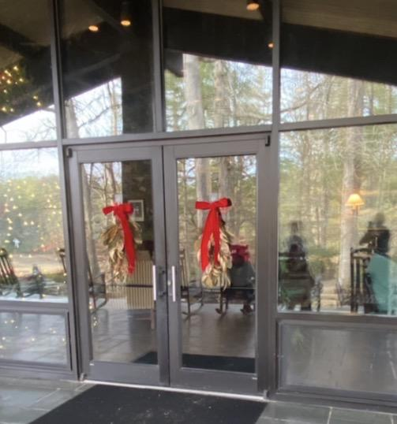
So what does Christmas at Kanuga look like? The Center wears festive garb but also helps visitors create their own. Each cabin has its own Christmas tree waiting for homemade ornaments. Among the special programs for all ages during Christmas week are opportunities to do woodworking, create watercolors, and decorate tree ornaments, all with the help of local artisans. I learned to make handsome origami Christmas stars and brought the holidays to our cabin.
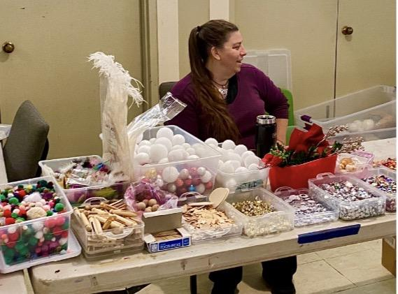
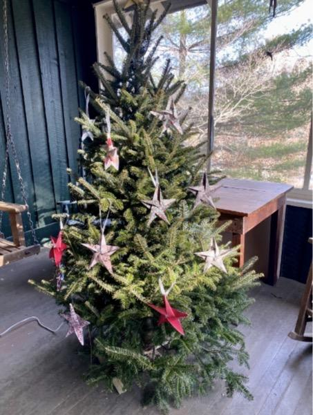
Tasty supplies for making gingerbread houses and landscapes are also on hand for a gingerbread competition.
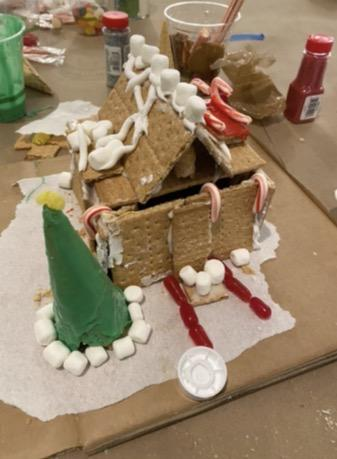
20 miles of hiking trails, a full-sized gymnasium with workout equipment, tennis, and a playground for little ones are among the athletic options. In summer, boating and swimming are also available. Both outdoors and indoors one can find a labyrinth to walk, a medieval meditation or prayer path.
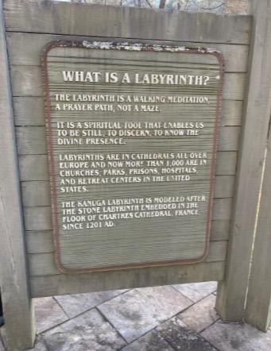
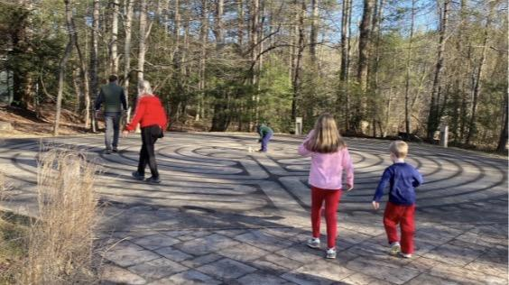
In the lodge, a comfortable library offers blocks, books and games for everyone. Visitors may take advantage of the living room piano; when the fire is lit, s’mores are on the menu. Christmas movies, hot chocolate, and even an English tea fill the lodge with holiday cheer.
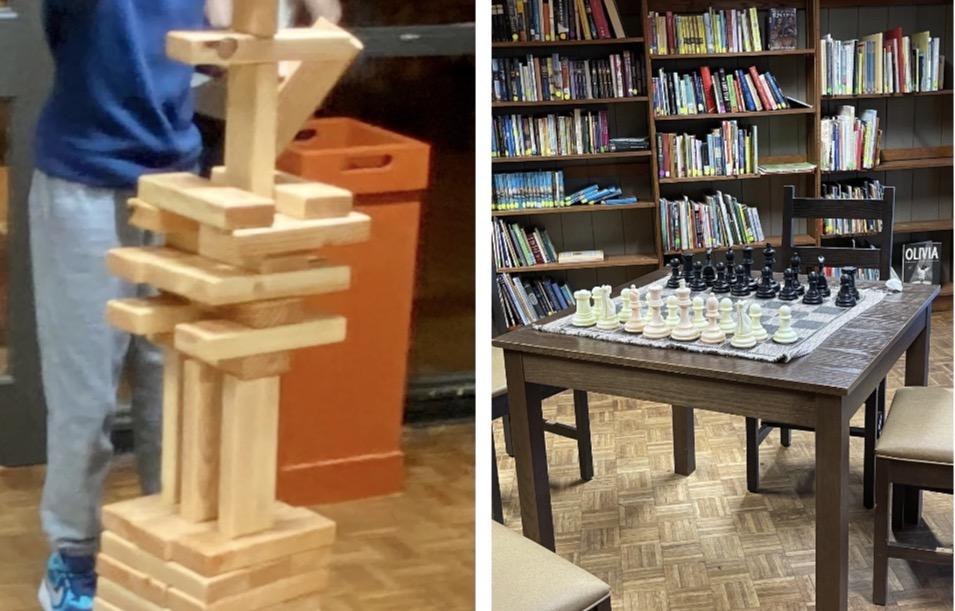
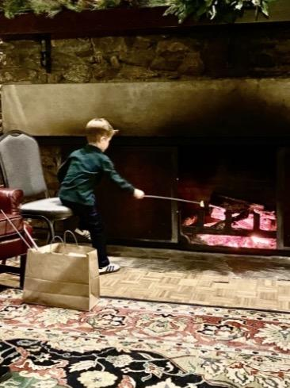
Marshmallows and cocoa were not our only sustenance. For those of us welcoming a kitchen holiday, we enjoyed three buffet meals a day in a handsome dining room in the lodge. The food was good and sometimes excellent. Alternatives of course existed ten minutes away in nearby Hendersonville restaurants, but all meals at Kanuga were included in the room fees. For those of us who had not finished Christmas shopping, area craftspeople hold a pop-up shop and a well-stocked gift shop offers everything from pajamas to key rings.
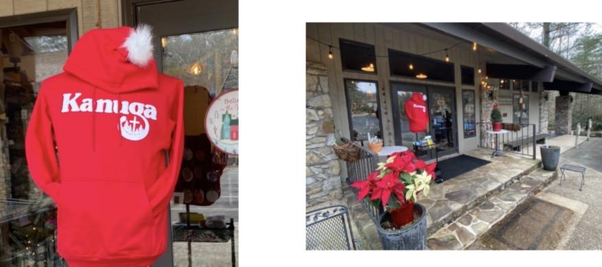
While Kanuga is open to all faiths, its Episcopal roots are evident in its beautiful chapel that holds regular services during Christmas week, featuring visiting clergy and musicians.
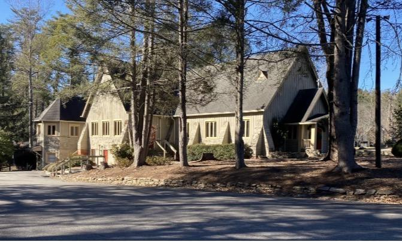
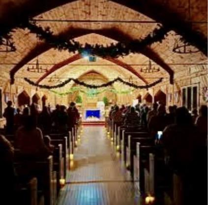
Driving to Kanuga, we saw remaining evidence of Hurricane Helene in washed-out roads and trash-filled riverbanks. Kanuga was not spared. Fortunately, volunteers rallied and most damage, much from fallen trees, has been repaired.
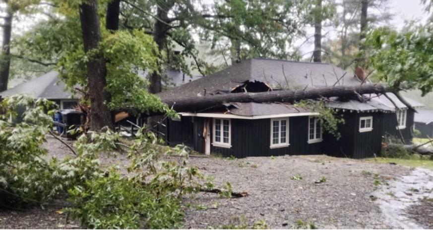
Today, Lake Kanuga is drained, but not due to hurricane damage. In cooler months, the lake is drained for maintenance and dock repairs. Rocking chairs line the porch in anticipation of the lake’s being refilled in the spring.
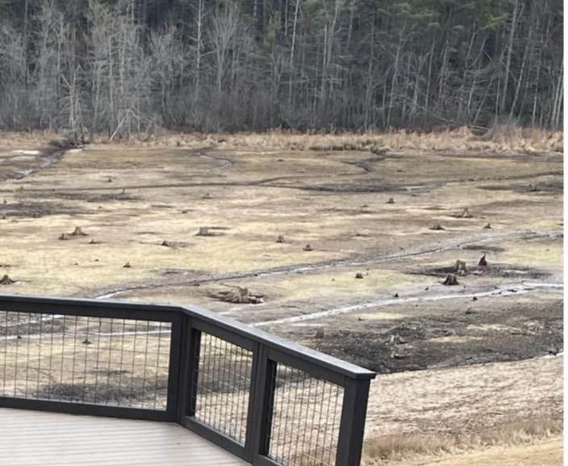
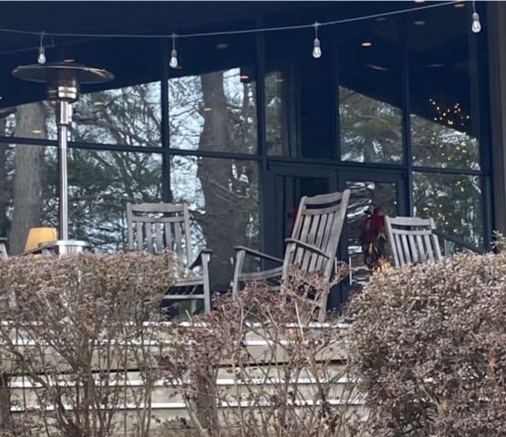
Fortunately, the drained lake did not confuse Santa. He found us in our cabin and made our Christmas adventure complete.
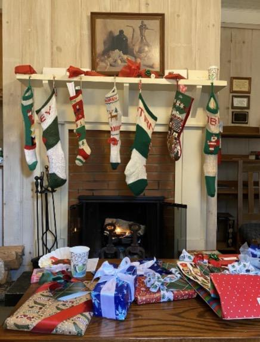